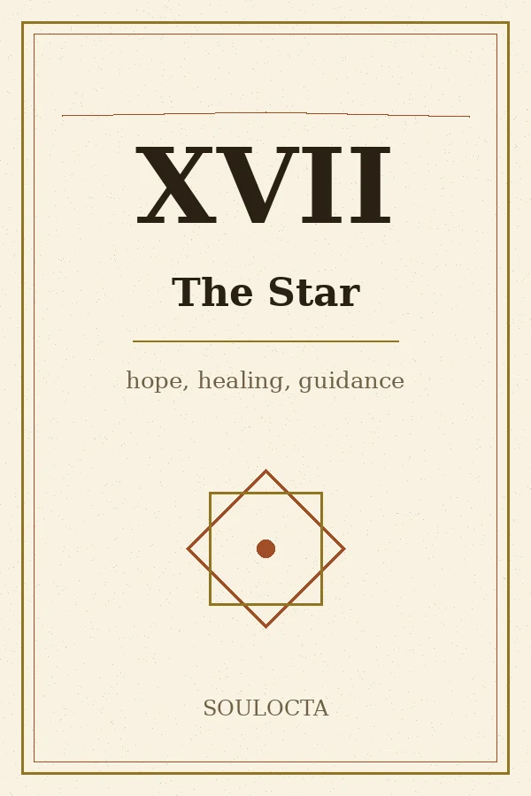

Year ahead · 2027
Your 2027 Personal Year — Destiny Matrix Calculator
One number for the year ahead — the theme 2027 holds for you, from your birth date alone.
100% Free · Instant Calculation · Private (Runs Locally in Your Browser).

Formula: personal year = reduce(day + month + digit-sum(2027)). The digit sum of 2027 is 2 + 0 + 2 + 7 = 11.
How it is calculated
Day (A) + month (B) + digit sum of the year. For 2027 the digit sum is 11. For 14 June 1995: 14 + 6 + 11 = 31 → 4, the Emperor.
What it means
A theme for 2027, not a prediction. Set one intention for it in January — structure for the Emperor, hope for the Star — and check it in June. Read the arcana in the 22 arcana guide.
How the 2027 personal year is calculated
Your personal year for 2027 is calculated from your day and month plus the digit sum of the year. Some readers call the whole system the matrix destiny chart, and the personal year is one of its simplest calculations. The digit sum of 2027 is 2 plus 0 plus 2 plus 7, which is 11. Add your day number A and your month number B to 11, then reduce the total to 22 or less. Take 14 June 1995: day 14 plus month 6 plus 11 is 31, which reduces to 4, the Emperor. Take 14 March 1990: day 14 plus month 3 plus 11 is 28, which reduces to 10, the Wheel of Fortune. Take 5 January 1990: day 5 plus month 1 plus 11 is 17, the Star. The same method works for any year: for 2028 the digit sum is 12, for 2026 it is 10. Your main chart never changes, because your birth date never changes, but your personal year changes every 1 January, which is why the same person can have a quiet year followed by a loud one.
What 2027 itself brings
2027 as a year has its own number too. Add its digits, 2 plus 0 plus 2 plus 7, and you get 11, which reduces to 2, the High Priestess. Some readers call this the universal year, and they read it as a year of listening, patience and paying attention to what is not being said. Whether or not you believe in universal years, the arithmetic is the same as the personal year, and it is a useful way to think about the mood of a year. A year that asks for patience is a bad year for rushing, and a good year for learning, reading and preparing. Your personal year describes your theme inside that larger mood, and the two together are more useful than either one alone.
Every personal year, 1 to 22
A personal year of 1, the Magician, is a year for starting: begin the thing you have been talking about, and let the first step teach you what the plan should be. A year of 2, the High Priestess, is a year for listening and waiting: gather information, keep your own counsel, and do not force a decision. A year of 3, the Empress, is a year for growth: tend what you already have, and let it grow steadily. A year of 4, the Emperor, is a year for structure: set rules, keep a budget, and build something that lasts. A year of 5, the Hierophant, is a year for learning: find a teacher, follow a method, and pass on what you learn. A year of 6, the Lovers, is a year for choosing: decide what you value, and let that decision shape the year. A year of 7, the Chariot, is a year for direction: pick one goal and stay on course. A year of 8, Justice, is a year for putting things right: settle what is owed, and say what needs saying. A year of 9, the Hermit, is a year for quiet: step back, read, walk, and return with something worth saying. A year of 10, the Wheel of Fortune, is a year of change: expect turns, and be ready to move when the door opens.
A year of 11, Strength, is a year for endurance: carry what you must carry, and ask for help before you break. A year of 12, the Hanged Man, is a year for pausing: stop pushing, look at the situation upside down, and wait. A year of 13, Death, is a year for endings: close what is already over, properly, and make room. A year of 14, Temperance, is a year for balance: mix work and rest until life feels steady. A year of 15, the Devil, is a year for honesty about desire: look at what owns you, and change one habit. A year of 16, the Tower, is a year for rebuilding: let what is false fall, and build slowly on honest ground. A year of 17, the Star, is a year for hope: heal, create, and share what you have learned. A year of 18, the Moon, is a year for checking the facts in daylight: write the fear down, and ask what evidence supports it. A year of 19, the Sun, is a year for joy: be direct, be warm, and celebrate what is going well. A year of 20, Judgement, is a year for answering a call: own what is yours, release what is not, and begin again. A year of 21, the World, is a year for completion: finish the long journey, and thank the people who helped. A year of 22, the Fool, is a year for beginning: step forward without knowing everything, and take the smallest brave step.
Month by month: how to use a personal year
A personal year is a theme, not a timetable, but it is more useful if you give it a shape. In January, write the theme down in one sentence and set one intention for the year, in plain words. In March, check whether the intention still fits, and change it if it does not, because a theme that cannot change is a prison. In June, look back at the first six months and ask what actually happened, not what you hoped would happen. In September, do the one thing you have been avoiding, because the second half of the year is where a theme is usually decided. In December, write down what the year taught you, in three sentences, and keep it somewhere you will find it next January. A year you review is a year you learn from. A year you do not review is a year that repeats.
Three common mistakes
The first mistake is treating a personal year as a prediction. It is not. A year of 4, the Emperor, does not guarantee a promotion, and a year of 16, the Tower, does not guarantee a disaster. The second mistake is reading only your own personal year and ignoring the people around you. Your year happens inside a family, a workplace and a country, and those have their own themes. The third mistake is waiting for the year to do the work. A theme is a direction, not a delivery service. The Emperor asks you to set the rule. The Star asks you to take the step. The Chariot asks you to steer. None of them will do it for you, and that is the point.
Keep reading
If you want the whole picture, calculate your Destiny Matrix calculator chart first, then read the destiny matrix for beginners guide and the destiny matrix FAQ. To compare systems, read destiny matrix vs numerology and destiny matrix vs tarot.
What 2027 cannot tell you
Your 2027 personal year cannot tell you whether you will get married, get a job, earn a certain amount of money, or stay healthy. It cannot tell you what will happen in any given month, and it cannot tell you what someone else will do. Those are questions for real life, not for a chart. What it can do is give you a word for the year, a theme to carry with you, and a reason to pause in January and ask what you actually want from the next twelve months. That is a small thing, and it is worth doing, as long as you know it is a small thing.
Frequently asked questions
What is a Destiny Matrix personal year?
It is the arcana that governs one calendar year for you. It is calculated from your day and month plus the digit sum of that year. Your main chart never changes, because your birth date never changes, but your personal year changes every 1 January.
How do I calculate my 2027 personal year?
Add your day and month to 11. That is the digit sum of 2027. Then reduce the total to 22 or less. For 14 June 1995 that is 14 plus 6 plus 11, which is 31, reducing to 4, the Emperor. The calculator on this page does it for any date.
Does my personal year change every year?
Yes — the year number changes each 1 January, so your personal year arcana changes too. Your main chart never changes, because it comes from your birth date alone, but the year you are living in is different every time, and so is its theme.
Is my 2027 personal year a prediction?
No — it is a theme for reflection, not a prediction. It cannot tell you what will happen in any given month. Treat it as useful for planning: set one honest intention in January, and check in June whether the theme still fits your life.